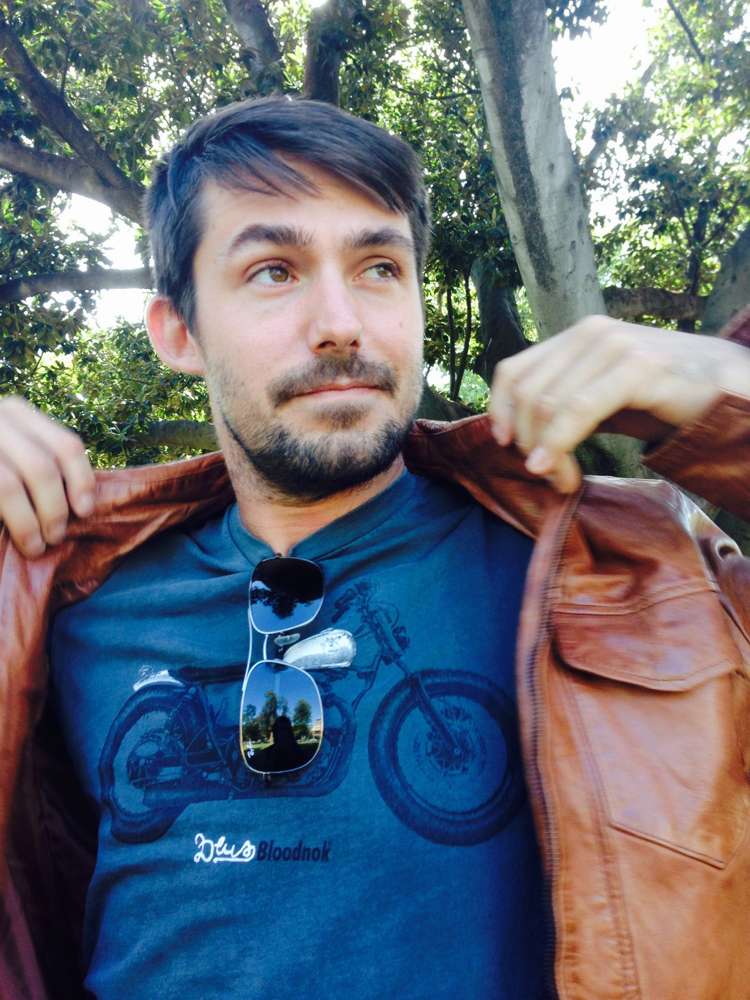

I live in beautiful sunny Queensland where I tirelessly tackle the world's electronic security and surveillance issues. I am never afraid to get my hands dirty and am always hungry to learn something not yet known. Born in Australia with European heritage, I spent his early years far from the IT world, growing up amongst the farming communities in mid NSW. Home schooled from an early age, I was noted at being years above the requirement of his curriculum, but sadly didn't continue my vocational journey through to university until recently, when I started studying a Bachelor of Information Technology at RMIT. I have always had a strong desire to increase my skill set, mastering many crafts from archery to knitting and even solving the Rubik's cube.

Kung Fu

As a physical outlet, I have been practising and teaching Kung Fu since early 2009 and have recently headed up my own branch school in the northern Gold Coast region. Among my notable martial achievements are being able to do single knuckle pushups and break concrete tiles with my head.
Music
Growing up within a musical family, I inevitably became a proficient musician and performer. I have spent many years playing professionally in bands and have evolved to become a solo artist, mastering looping and effects to the likes of Ed Sheeran.
Creative

I also enjoy pursuing a pseudo career in photography and videography that I found a knack for through my involvement in on-screen acting. This website's cover photo and thumbnail are from my portfolio.
Family
I was happily married in late 2017 and live with my beautiful wife Mallory and our doggo, Darcy.